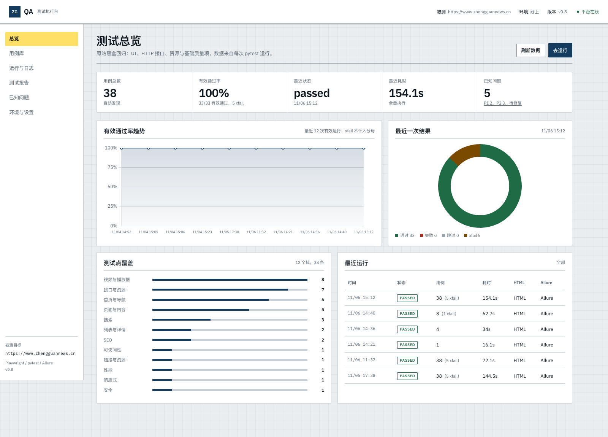
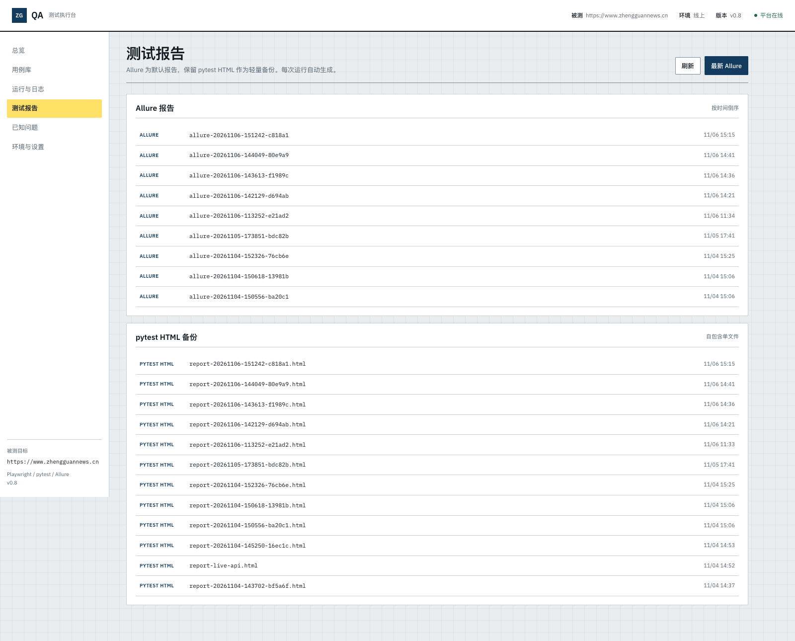
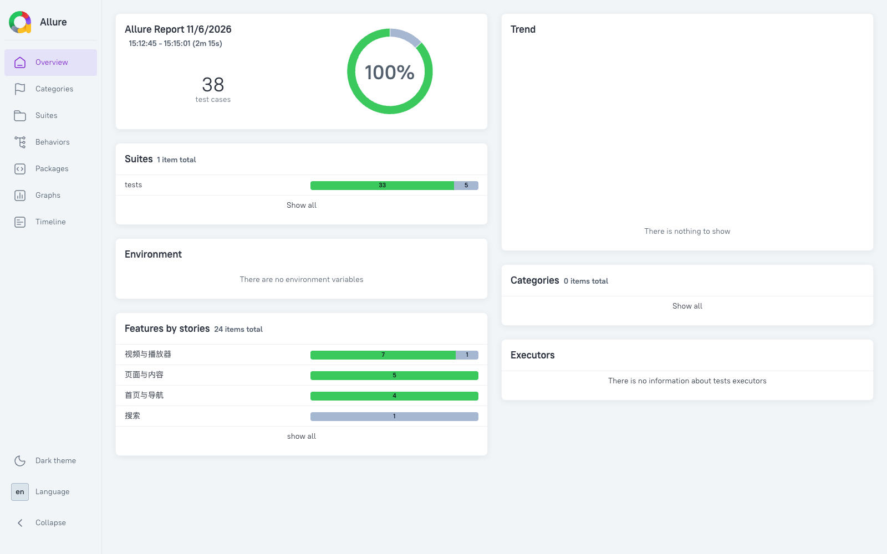
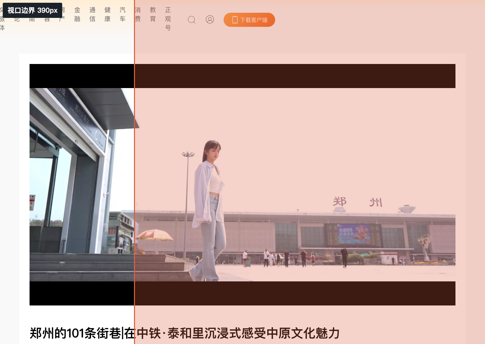

A06P1
搜索结果被重定向到客户端下载页
访问搜索 URL 后 302 跳转 /down.html，没有搜索结果页。
GET /search.html/正观
→ 302 Location: /down.html
落地 title：客户端下载 居中、守正、观天下
影响 站内搜索不可用，用户被导流到下载页；建议 恢复结果页或给出无结果提示
正观新闻，38 条用例 / 12 个测试域 / 一次运行三份产物。本页离线可打开，图片与数据均取自本次现场采集。
从总览到执行、报告，再到已知问题，形成一条可演示、可归档的链路。



均为现场复现结果，对应套件中的 5 条 xfail。点击图片可查看原图。
访问搜索 URL 后 302 跳转 /down.html，没有搜索结果页。
随机不存在的 URL 返回 HTTP 200，正文仅 22 字节的 404 文案。
声明为 sitemap 的地址返回 HTML 404 页，类型也不是 XML。
输入 测试<>&%20 加 30 个「长」，提交后仍落到 /down.html。

移动端上下文 clientWidth 390，但 video 渲染 1240×702，页面横向滚动宽度 1412。

xfail 是“已知问题”的显式标记：问题已复现、已记录、已留证，避免每次回归都红一片；修复后删除 pytest.xfail(...)，断言即恢复为正常通过。
口径：有效用例 = passed + failed；有效通过率 = 33/33 = 100%，xfail 单列、不计入分母。
20261106-151242-c818a1